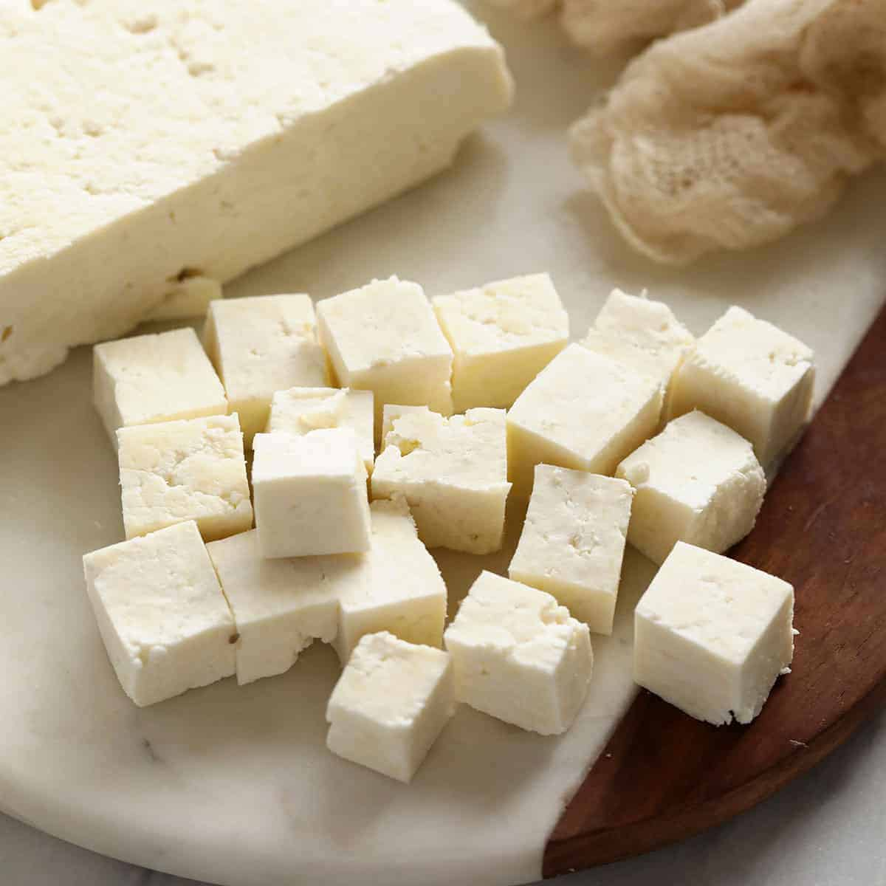

Paneer

Description
Paneer is a type of Indian soft cheese
made from compressing curdled milk. Paneer is found in many different
Indian dishes.
Ingredients
-
1 1/2 liters full fat milk
-
2 to 3 tablespoons vinegar
Instructions
-
Pour milk to a heavy bottom pot and bring it to a gentle boil on a medium heat.
Stir occaisionally to ensure the milk doesn't scorch on the bottom of the pot.
-
While the milk boils, place a colander over a large bowl to collect the whey. Spread a
cheese cloth over the colander.
-
When the milk starts to boil, remove the pot from heat and add the 2 tablespoons of
vinegar.
-
Stir well for 1 to 2 minutes until the entire pot of milk curdles completely.
If done correctly, the whey will be clear rather than milky. If the milk doesn't
curdle completely, add one tablespoon vinegar and place on heat.
-
Gently pour the curdled milk and whey onto the colander. Quickly cool the paneer by pouring
cold water over it.
-
Rinse the paneer to remove the smell and taste of the vinegar.
-
Wring out the paneer in the cheese cloth. Squeeze out as much whey and water as possible.
Make a knot in the cheese cloth and hang for 30 mins
-
Remove the knot and place the cheese cloth with the paneer onto a flat board. Press the paneer
with a heavy object to set the paneer.
-
After 3-4 hours remove the paneer, chop the paneer into cubes and the recipe is complete!
Back to the Recipe List